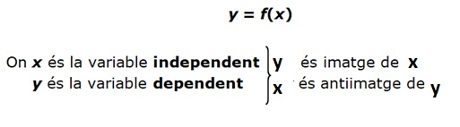

Funcions
1. Concepte de funció y=f(x)

- Un text, es a dir, una expressió verbal que descriu la funció.
- Una taula de valors; ens dona una visió quantitativa de la funció.
- Una gràfica; ens dona una visió més qualitativa.
- Una expressió algèbrica; és la formalització de la relació mitjançant una expressió matemàtica. Ens permet trobar qualsevol valor d'una de les variables a partir de l'altra. L'expressió algèbrica de la funció de l'exemple és . Cal remarcar, però, que no totes les funcions poden expressar-se algèbricament.
2. Domini d'una funció y=f(x)
El domini són tots els valors pels quals la funció està definida. Es a dir, que tenen imatge,
💡 DOMINI: Dom (f) = Conjunt de valors de la variable independent (x) que es poden substituir sense que doni error.
💡 RECORREGUT o IMATGE: Im (f) = Conjunt de totes les imatges del domini,el conjunt de possibles valors de y=f(x), es a dir, de la variable dependent.
- Error 1: Divisió per zero (0 al denominador).
- Error 2: Valors negatius dins d'una arrel d'índex parell.
- Error 3: Valors negatius o 0 dins d'un logaritme.
- Error 4: Valors incompatibles amb el context de l'enunciat.
Càlcul analític del domini segons el tipus de funció:
-
Funció polinòmica:
Sempre existeix imatge per a tot valor de la variable independent.f(x) = p(x) Domini de f(x) = -
Funció racional:
Quocient de polinomis. S'exclouen del domini els valors que anul·len el denominador.Domini de f(x) = \ { x | p(x) = 0 } -
Funció irracional:
Si l'índex de l'arrel és parell, el radicant ha de ser major o igual a zero. Si l'índex és imparell, no hi ha cap restricció.Arrel parell: Domini de f(x) = ℝ \ { x | p(x) < 0 } = { x | p(x) ≥ 0 }
Arrel imparell: Domini de f(x) =
-
Funció Exponencial
Sempre existeix imatge per a tot valor de la variable independent.Domini de f(x) = ℝFunció logarítmica:
L'argument ha de ser major que zero.Domini de f(x) = ℝ \ { x | p(x) ≤ 0 } = { x | p(x) > 0 }Funció definida a trossos:
Cal veure quins valors poden donar "error" a cada una de les seves definicions.f(x) =Domini de f(x) = ℝ \ { x | x no es pot substituir sense "error" o que no pertanyen a cap dels intervals que es poden substituir}f1 (x), si x ∈ (−∞,a) f2 (x), si x ∈ (a, b) f3 (x), si x ∈ (b, +∞) 3. Operacions amb funcions
Suma i resta
Multiplicació i divisió
Potències i arrels
4. Funció composta
Una operació entre funcions completament diferent de les anteriors és la composició de funcions. S'escriu amb el símbol º
Donades les funcions f(x) i g(x) , es defineixen les funcions:
Funció composta g ° f(x) i es llegeix f composta amb g
Funció composta f ° g(x) i es llegeix g composta amb fLa primera funció que s'aplica és la que es troba més a prop de la variable x, i és també la primera que es llegeix.
Esquema gràfic d'ambdues composicions per aclarir-ho millor.💡 La composició de funcions no és commutativa.
5. Funció inversa
La funció inversa f -1(x) és la que a cada valor de la variable y de f(x) li assigna un valor de la variable x, de manera que la variable independent de f passa a ser la variable dependent de f -1, i viceversa.
De manera esquemàtica, seria:
💡 Cal tenir en compte que hi ha funcions que no tenen inversa.
Succeeix quan dos o més valors de x diferents tenen la mateixa imatge.
Passos per a l'obtenció de la funció inversa:- Escriure la funció com a y = f(x): Substitueix per la variable y.
- Intercanviar les variables: Canvia totes les x per y, i totes les y per x.
- Aïllar la variable y: Fes les operacions àlgèbriques necessàries per a deixar la nova y sola a un costat de la igualtat.
- Redactar el resultat final: Substitueix y per la notació de la funció inversa, .
- Comprova que realment és la funció inversa .
6. Propietats de les funcions
Continuïtat
Una funció és contínua si la seva gràfica es pot dibuixar d'un sol traç, és a dir, no presenta punts de discontinuïtat: punts en els quals una petita variació de la variable independent produeix un salt en els valors de la variable dependent.Punts de tall amb els eixos
Els punts en els quals la funció y = f(x) talla els eixos es calculen així:
- Punts de tall amb l'eix Y: si fem x = 0 obtenim f(0), és a dir, el punt (0, f(0)).
- Punts de tall amb l'eix X: si fem f(x) = 0 obtenim el valor o els valors corresponents de x, és a dir, els punts (x, 0).
Creixement i decreixement. Màxims i mínims
Donats una funció f(x) i dos valors x1 i x2, de manera que x1 < x2:
Si f(x1) − f(x2) < 0, la funció és creixent entre x1 i x2.
Si f(x1) − f(x2) > 0, la funció és decreixent entre x1 i x2.
- Un màxim és un punt on la funció passa de ser creixent a decreixent.
- Un mínim és un punt on la funció passa de ser decreixent a creixent.
Simetries i periodicitat
Funció parella (simètrica respecte de l'eix Y): f(x) = f(−x)
Funció senar (simètrica respecte de l'origen de coordenades): f(−x) = −f(x)
Funció periòdica de període T: f(x) = f(x + T)
💡 Les funcions no tenen perquè tenir simetries ni periodicitat.
- Els polinomis que només tenen termes de grau parell són funcions parelles.
- Els polinomis que només tenen termes de grau imparell (senar) són funcions senars.
- Les funcions sinus, cosinus i tangent són funcions periòdiques i tenen simetries.